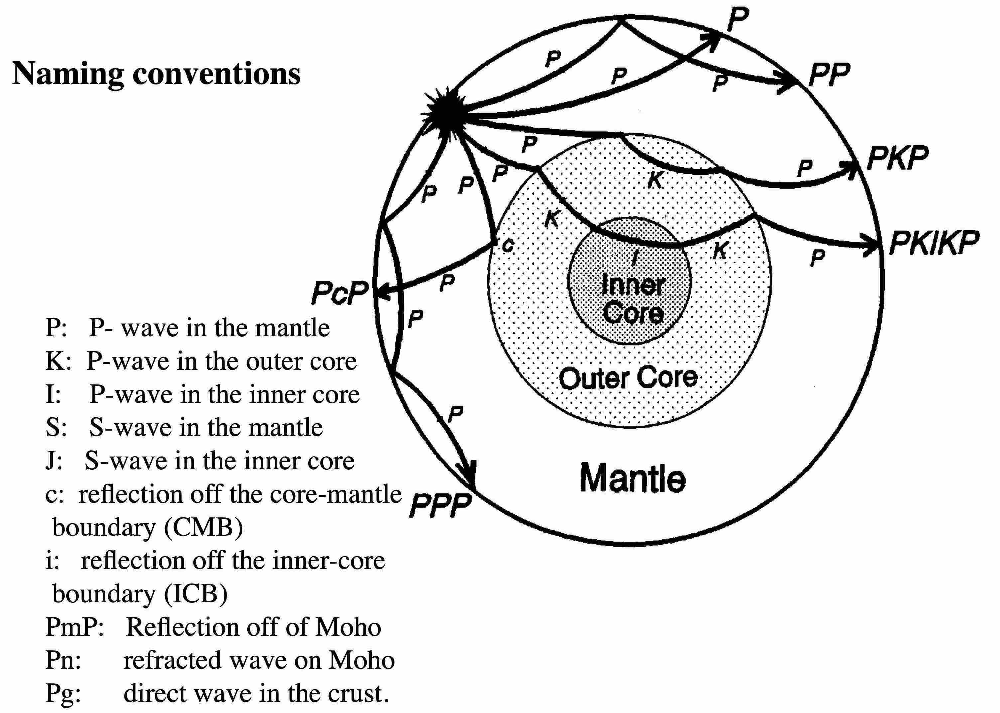
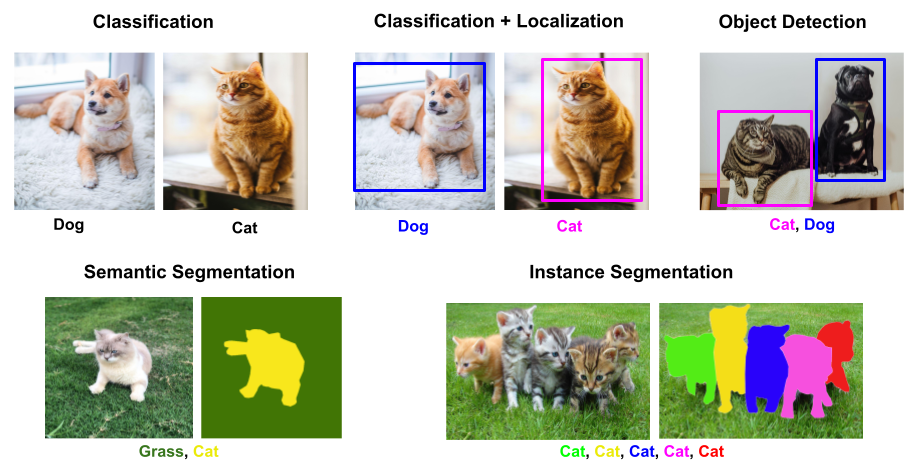
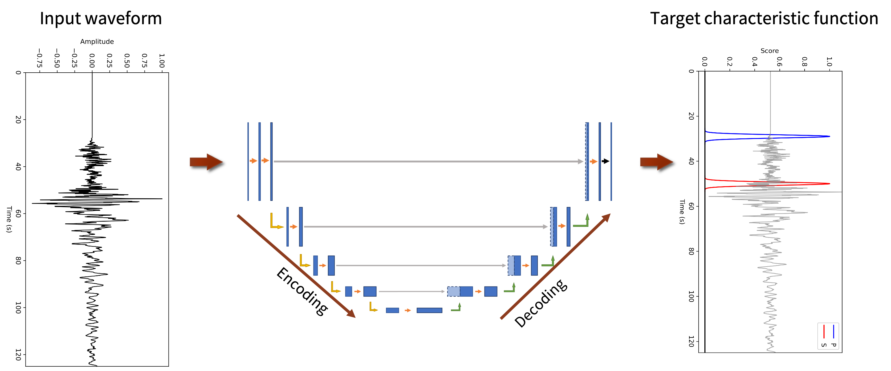
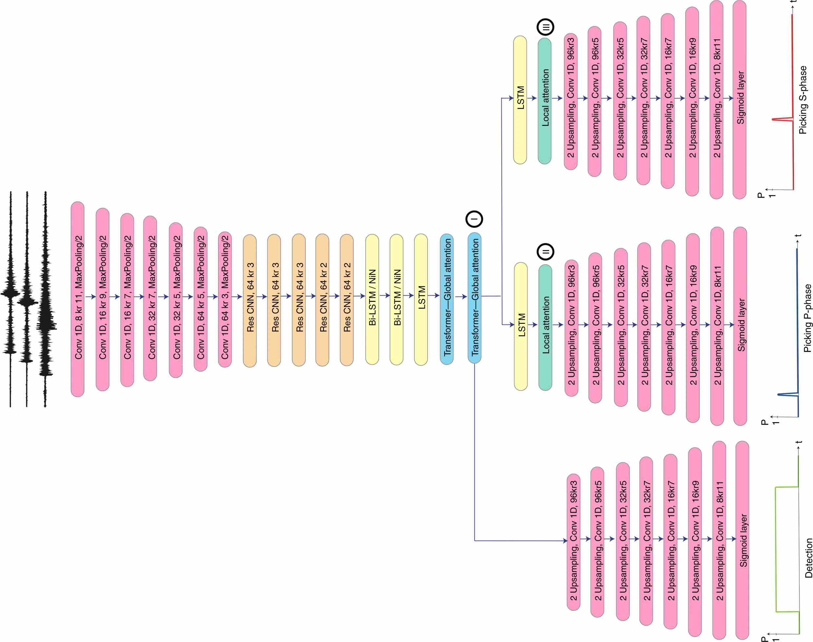
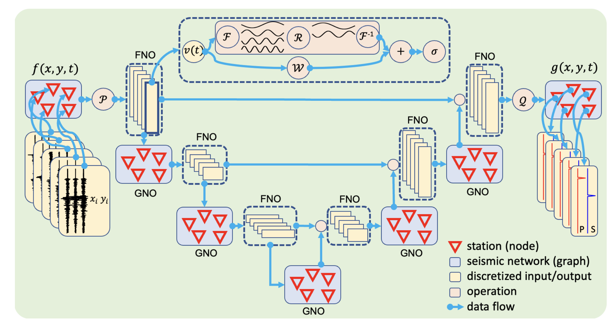
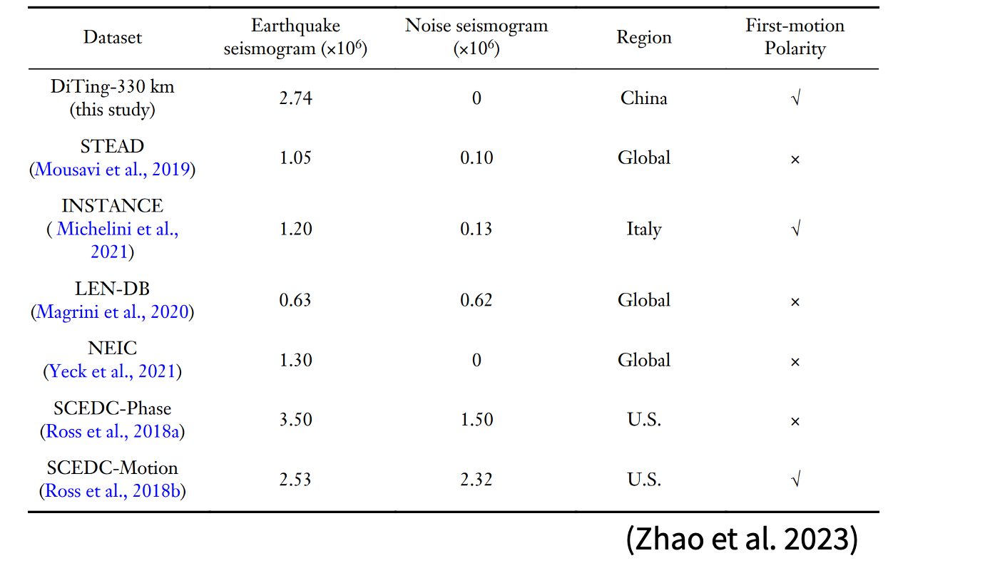
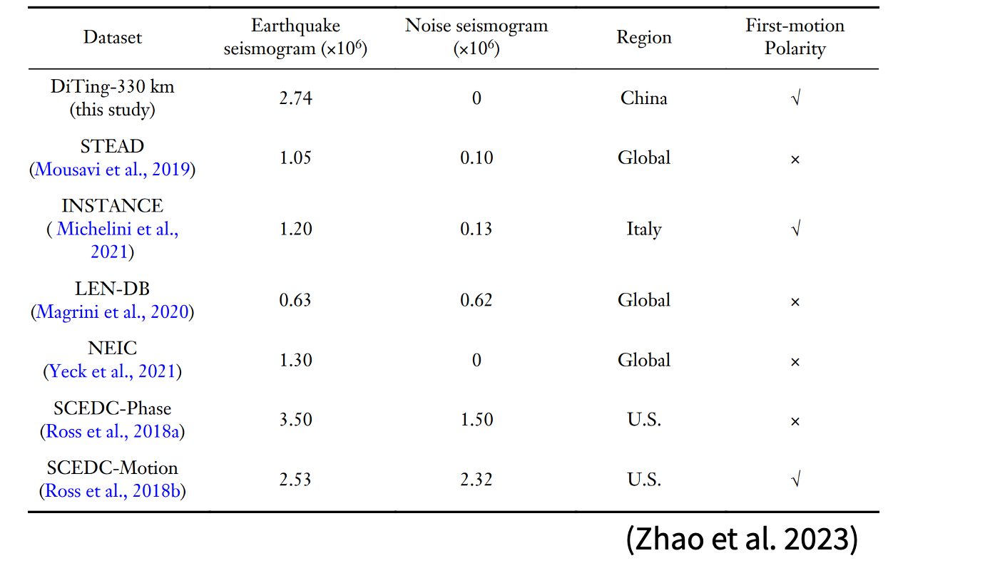
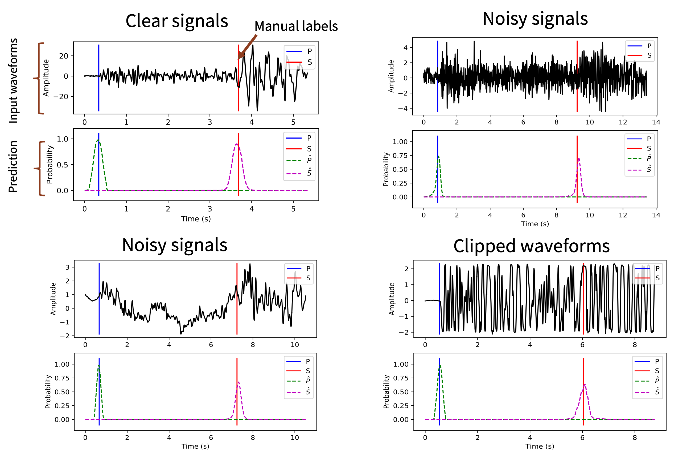

Phase Picking
Notebooks: codes/quakeflow_demo.ipynb
Seismic waves


Seismic phases



Information from seismic phases
- Earthquake source
- Earth's (Planetary) interior structure
- Subsurface exploration (reservior, geothermal, etc.)
- ...

Picking P and S waves

Background: Semantic Segmentation vs. Classification



Demo: Segment Anything Model (SAM)
Try the SAM model: link
How to apply deep learning to seismic phase picking?
Generalized seismic phase detection with deep learning

PhaseNet

EQTransformer for simultaneous earthquake detection and phase picking

Next-Generation Seismic Monitoring with Neural Operators (PhaseNO)

Large training dataset + Clear objective function
 


How to design the next model for detecting earthquake / picking seismic phases? What other seismic tasks can be solved with deep learning? What are other potential applications in Earth and Planetary Science?